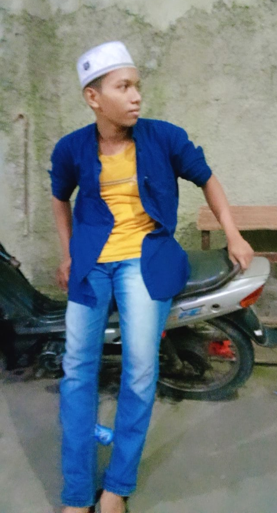

Pusat Ibadah dan Dakwah yang Menyejukkan Umat.
Masjid Jami' Nurul Hikmah didirikan pada tahun 1990 atas inisiatif warga sekitar yang merindukan tempat ibadah yang representatif. Berawal dari sebuah musala kayu sederhana, berkat gotong royong dan semangat jamaah, kini masjid telah berkembang menjadi pusat kegiatan dakwah dan sosial yang megah di wilayah ini. Nama "Nurul Hikmah" sendiri diambil dengan harapan masjid ini menjadi cahaya kebijaksanaan bagi seluruh umat.
PUJI ASTUTI
ABU YAMAN

Ilham Maulana
(15241002)
Stephen Baldwin
(15241024)
Muhammad Zaid Dhiyaulhaq
(15240021)
Saptur Rahman
(15240139)
Abi Pradipa Putra Ramadhan
(15240536)
| No | Nama | Tanggal | Nominal Setoran | Saldo Kumulatif | Status |
|---|---|---|---|---|---|
| 1 | Hamba Allah | 10-04-2026 | Rp 500.000 | Rp 2.500.000 | Aktif |
Kami berkomitmen mengelola amanah umat secara terbuka dan akuntabel.
Kami sebagai pengurus berusaha semaksimal mungkin untuk meningkatkan pelayaan kepada para jama'ah. Tetap terhubung dengan kami melalui media sosial atau hubungi kami untuk layanan informasi dan kegiatan dakwah.